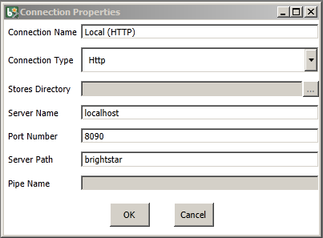
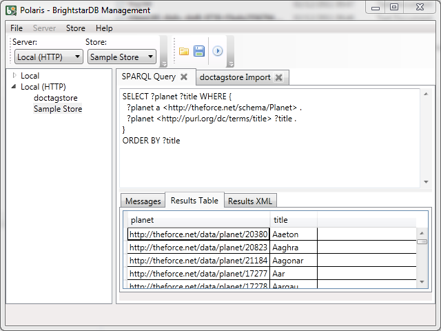
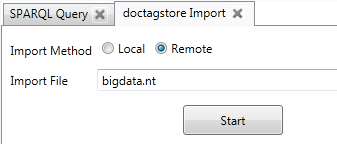
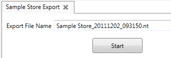
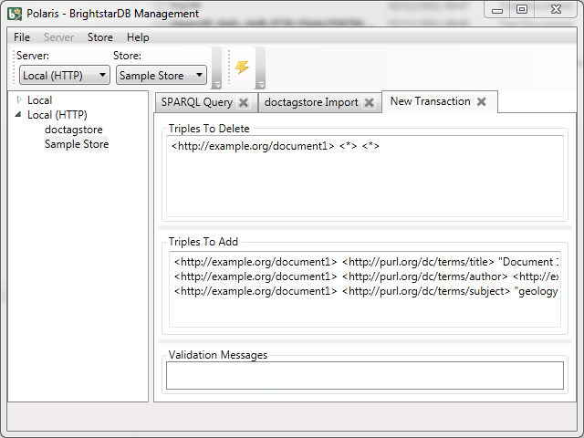
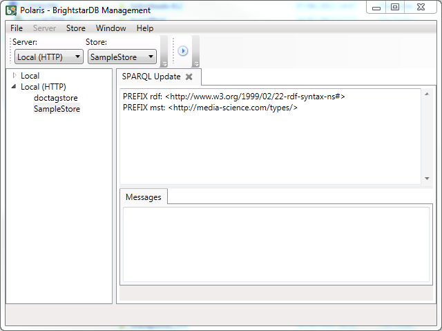
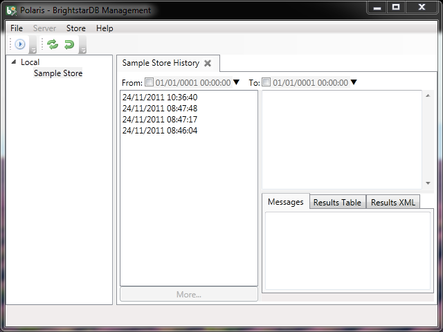
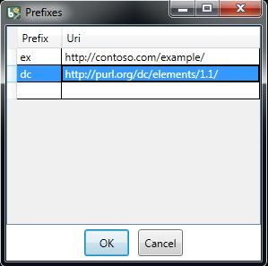

Polaris is a Windows desktop application that allows a user to manage various aspects of local and remote BrightstarDB servers. Using Polaris you can:
- Create and delete stores on the server
- Import N-Triples or N-Quads files into a store
- Run a SPARQL query against a store
- Run an update transaction against a store
Polaris is optionally installed as part of the BrightstarDB installer, if it is not initially installed, it can be installed later by re-running the installer and selecting the appropriate option.
Polaris can be run by clicking on its short-cut, which can be found inside the folder BrightstarDB on the Start Menu. Alternatively it can be run from the command-line. To run from the command-line, run the BrightstarDB.Polaris.exe executable. This executable can be found in [INSTALLDIR]ToolsPolaris. The executable accepts the following command line parameters:
Parameter Description /log:{log file name} [/verbose] With the /log: option specified on the command-line, Polaris will write logging information to the file named after the colon (:) character. The optional /verbose flag will ensure that more verbose logging information is also written to this file.
The Polaris user interface consists of three areas as shown in the screenshot below.
To configure Polaris with a new connection, click on File > Connect... to bring up the Connection Properties dialog as shown in the screenshot below.
The fields of this dialog should be filled out as follows:
- **Connection Name: **Enter a memorable name for this connection - this is the name that will be displayed in the Polaris interface.
- **Connection Type: **Choose the protocol to use to connect to the server. This may be one of:
- Embedded : Select this option to connect directly to the store data files. This is only recommended when the data files are accessible on a local disk and should not be used to access data files that any other process (such as a BrightstarDB server) could be attempting to access at the same time.
- HTTP: Connect to the server using the HTTP protocol. This is the recommended protocol to use to connect to a remote server.
- TCP: Connect to the server using the TCP protocol
- Named Pipes: Connect to the server over a named pipe.
- Stores Directory: This property is required only for the Embedded connection type. Specify the full path to the directory that contains the BrightstarDB server’s store folders.
- Server Name: This property is required for all connection types other than Embedded. Specify the name of the machine that hosts the BrightstarDB server.
- Port Number: This property is required for the HTTP and TCP connection types. For HTTP, the default port number is 8090. For TCP, the default is 8095.
- Server Path: This property is required for the HTTP and TCP connection types. For both connection types, the default path is ‘brightstar’ (without the quotes).
- Pipe Name: This property is required only for the Named Pipes connection type. Specify the named pipe used to connect to the BrightstarDB server. The default pipe name is ‘brightstar’ (without the quotes).
When you select the HTTP, TCP or NamedPipe connection types from the drop-down list, the dialog will automatically populate with the default settings for making a connection to a local BrightstarDB server. You can modify the server name and/or the other settings to make a connection to a remote server or to a server with a non-default port setup.
When you click OK, Polaris will attempt to contact the server using the information you have provided, if contact is established then a list of all stores hosted on that server will be retrieved and displayed under the server name in the Server List area. If contact cannot be established for some reason, an error dialog will display the details of the problem encountered.
To remove a connection from the list, select the server name in the Server List area and click on Server > Remove Server From List, or right-click on the server name and select Remove Server From List from the popup menu. You will be prompted to confirm this operation before the server is removed from the list.
To edit an existing connection, select the server name in the Server List area and click on Server > Edit Connection, or right-click on the server name and select “Edit” from the popup menu. The Connection Properties dialog will be displayed allowing you to edit the parameters used for the connection.
If for some reason a connection cannot be established to a server, the message “Could not establish connection” will be displayed next to the server name in the Server List. To attempt to reconnect to the server, select the server from the list and click on Server > Refresh.
The connections you add to Polaris are stored in a configuration file under your local AppData folder and they will be automatically saved when you add/remove a connection.
To add a new store to a server, select the server from the Server List area and then click on Server > New Store.., or right-click on the server and select New Store from the popup menu. In the dialog box that is displayed, enter the name of the store. A default GUID-based name is generated for you, but changing this to a more meaningful name will probably be useful for you and other users of the server. The new store will be added to the end of the list of stores for the server in the Server List area.
To delete a store from a server, select the store from the Server List area and then click on Store > Delete, or right-click on the store and select Delete. You will asked to confirm the operation before it is completed.
Removing a store from a server deletes the entire contents of the store from the server. It is not possible to undo this operation once it is confirmed.
Polaris allows users to write SPARQL queries and execute them against a BrightstarDB store. To create a query, select the store you wish to run the query against and then click on Store > New > SPARQL Query, or right click on the store and select New > SPARQL Query from the popup menu. This will add a new SPARQL Query tab to the Tab area. The interface is shown in the screenshot below.
The toolbars added to the Menu area allow you to change the store that the query will execute against by selecting the server and the store from the drop-down lists. The query is executed either by pressing the F5 key or by clicking on the .. image:: ../src/images/polaris_runquerybutton.png button in the tool bar.
The tab itself is divided into a top area where you can write your SPARQL query and a lower area which displays messages and results when a query is executed. If part of the text in this area is selected when the query is run, then only the selected text will be passed to BrightstarDB. A query that results in SPARQL bindings (typically a SELECT query) will display results in a tabular format in the Results Table tab. All queries will also display their results in the Results XML tab.
Note
For more details about the SPARQL query language please refer to Introduction To SPARQL.
You can save SPARQL queries entered in Polaris to use in later sessions. To save a query, select the tab that contains the query you want to save and then click on the .. image:: ../src/images/disk.png button. By default your queries will be saved to a folder named “SPARQL Queries” inside your “My Documents” folder - if this folder does not already exist, you will be prompted to allow Polaris to create it for you (if you choose not to allow this, you can choose a different location to save queries to). Saved queries are stored with a ”.sq” extension.
To load a saved query, open a new SPARQL Query tab or select an existing one and then click on the .. image:: ../src/images/folder.png button. A file dialog will appear allowing you to select the query to be loaded.
Polaris allows users to import RDF data from files into an existing BrightstarDB store. Polaris supports two modes of data import: Remote and Local. A Remote import specifies the name of a file that is located in a specific directory on the target server and submits a job for that file to be imported into the store. A Local import specifies the name of a file that is accessible to Polaris, processes it locally and then creates a job to add the data contained in that file to the target server. Remote import allows for much more efficient loading of very large data sets but it requires that the data file(s) should first be copied onto the server.
Note
For details about the RDF syntaxes that are supported by BrightstarDB and Polaris, please refer to Supported RDF Syntaxes.
To run a Remote import:

- Ensure that the file to be imported is copied into the Import folder located directly under the stores directory of the server. When connecting to a server via HTTP, TCP or Named Pipes, the import directory is located in the directory on the server where the stores are located (typically [INSTALLDIR]Data). When connecting to an embedded store, the import directory should be created in the directory specified for the embedded store. If this directory does not exist it should be created. You should also ensure that the user that the BrightstarDB service has sufficient privileges to be able to read the files to be imported.
- From the Polaris interface, create a new import task by selecting the store the data is to be imported into and then clicking Store > New > Import Job, or by right-clicking on the store and selecting New > Import Job from the popup menu.
- In the interface that is displayed, change the Import Method radio button selection to Remote and enter the name of the file to be imported. Do not specify the path to the file, just the file name - the server will only look for this file in its Import directory.
- Click on the Start button to submit the job to the server.
- Once the job is submitted, the interface will track the job progress, but you can at any time exit Polaris and the job will continue to run on the server.
To run a Local import:
- From the Polaris interface, create a new import task by selecting the store the data is to be imported into and clicking Store > New > Import Job.
- In the interface that is displayed, ensure the Import Method is set to Local and enter the full path to the file to be imported - you can use the .. button to launch a file browser to locate the file.
- Click on the Start button.
- Polaris will attempt to parse the contents of the file and create a new job to submit the data found in the file to the server.
- Once the job is submitted, the interface will track the job progress, but you can at any time exit Polaris and the job will continue to run on the server.
Note
Local import is not recommended for large data files. If the file you try to import exceeds 50MB in size a warning will be displayed - you may still continue with the import, but you may experience better performance if you copy the data file to the server’s import folder and use a Remote import instead. This even applies to the case where the server connection type is Embedded.
You can export all of the RDF data contained in a BrightstarDB store using Polaris. For performance and network considerations, data export is limited to working as a remote job - the export request is submitted as a long-running job and the data is written to a specific directory on the target server.
To run an export:

- From the Polaris interface, create a new export task by selecting the store that the data is to be exported from and then clicking Store > New > Export Job, or by right-clicking on the store and selecting New > Export Job from the popup menu.
- In the interface that is displayed, a default name for the export file is generated based on the store name and the current date/time. You can modify this file name if you wish.
- Click on the Start button to submit the job to the server.
- Once the job is submitted, the interface will track the job progress. For connections other than a local embedded connection, you can exit Polaris and the job will continue to run on the server.
- Once the job is completed, the exported data will be found in the Import folder located directly under the stores directory of the server.
An update transaction allows you to specify the triples to delete from and add to a store. Deletions are always processed before additions, allowing you to effectively replace or update property values by issuing a delete and an add in the same transaction.
The triples to be deleted are specified using N-Triples syntax with one extension. The special symbol <*> can be used in place of a URI or literal value to specify a wildcard match so:
<http://example.org/people/alice> <http://xmlns.org/foaf/0.1/name> <*>
Would remove all FOAF name properties from the resource http://example.org/people/alice equally, the following can be used to remove all properties from the resource.
<http://example.org/people/alice> <*> <*>
The triples to be added are also specified using N-Triples syntax, but in this case the wildcard symbol is not supported.
Note
For a quick introduction to the N-Triples syntax please refer to Introduction To NTriples
To run an update transaction:

- From the Polaris interface, create a new update task by selecting the store the update is to be executed against and clicking Store > New > Transaction, or by right clicking on the store and selecting New > Transaction from the popup menu.
- In the interface that is displayed, enter the triple patterns to delete and the triples to add into the relevant boxes.
- To run the transaction click on the .. image:: ../src/images/polaris_executetransactionbutton.png icon in the tool bar.
- A dialog box will display the outcome of the transaction.
Note
You can run the same transaction against a different store by changing the selected server and store in the drop-down lists in the toolbar area.
The SPARQL Update support in BrightstarDB allows you to selectively update, add or delete data in a BrightstarDB store in a transaction. BrightstarDB supports the SPARQL 1.1 Update language.
To run an update transaction:

- From the Polaris interface, create a new SPARQL Update task by selecting the store the update is to be executed against and clicking Store > New > SPARQL Update, or by right clicking on the store and selecting New > SPARQL Update from the popup menu.
- In the interface that is displayed, enter the SPARQL Update request into the upper text box.
- To run the transaction click on the .. image:: ../src/images/polaris_runquerybutton.png icon in the tool bar.
- The results of the operation will be displayed in the lower text area.
Note
You can run the same transaction against a different store by changing the selected server and store in the drop-down lists in the toolbar area.
Polaris provides the ability to view all the previous states of a BrightstarDB store and to query the store as it existed at any previous point in time. You can also “revert” the store to a previous state. These operations can be performed using the Store History View. To access this view, select the store in the Server List area on the left and click on Store > New > History View, or right-click on the store and select New > History View from the popup menu. This will add a new history view tab to the window as shown in the screenshot below.
The tab content is divided into two panes. The left-hand pane shows a list of the historical commit points for the store as the date/time when the store update was committed. By default this panel lists the 20 most recent commits, however you can use the fields at the top of the panel to restrict the date range. The black arrow next to each date/time field allows you to pick a date, and any of the fields in the picker can be altered by clicking on the field and using the up and down arrows on the keyboard or the mouse wheel. When retrieving commit points from the store, the server returns a maximum of 100 commit points in one go, if there are more than 100 commit points in the date range, the “More...” button is enabled to allow you to retrieve the next 100 from the server. You can refresh the commit list by clicking on the .. image:: ../src/images/polaris_refreshbutton.png, this will clear the current list of commit points and the current date filters and re-run the query to retrieve the latest 20 commit points from the server.
The right-hand panel allows you to write a SPARQL query and execute it against the store. With no commit point selected on the left, the query is executed against the store in its current state. However, once you select a commit point, the query is executed against that commit point. To run the SPARQL query click on the .. image:: ../src/images/polaris_runquerybutton.png button in the tool bar.
If you wish to revert the store to a previous state, you can do this by selecting the commit point you want to revert to and clicking on the .. image:: ../src/images/polaris_revertbutton.png button in the toolbar. You will be prompted to confirm this action before it is applied to the store. This action creates a new commit point that points back to the store as it exited at the selected commit point - it does not delete or remove the changes made since that commit point. When you revert the store in this way, the list of commit points and the date filters are cleared and the latest 20 commit points are retrieved from the server again.
As it can be cumbersome and slow to have to continually type in long URI strings, Polaris provides functionality to allow you to map the namespace URIs you most commonly use to shorter prefixes. These prefixes can be used both in SPARQL queries and in transactions.
To manage the prefixes defined in Polaris click on File > Settings > Prefixes. This displays the prefixes dialog, which will initially be empty. You can add a new prefix by entering a prefix string and URI in the next empty row. To delete a prefix, click on the row and press the Delete key. You can also modify a prefix or URI by selecting the text and typing directly into the text box.
Once a prefix is defined it will automatically be added to the start of any new SPARQL query you create as PREFIX declarations, and can then be used in the normal way that any PREFIX declaration in SPARQL can be used. Prefixes can also be used in transactions so instead of typing a full URI you can type the prefix followed by a colon and then the rest of the URI, the prefix and the colon are replaced by the URI specified in the prefixes dialog. For example if you map the prefix string “ex” to “http://contoso.com/example/”, and dc to “http://purl.org/dc/elements/1.1/” then the following NTriple in a transaction:
<http://contoso.com/example/1234> <http://purl.org/dc/elements/1.1/title> "This is an example" .
can be re-written more compactly as:
<ex:1234> <dc:title> "This is an example"
Note
Unlike SPARQL, the < > markers are still REQUIRED around each prefix:restOfUri string.